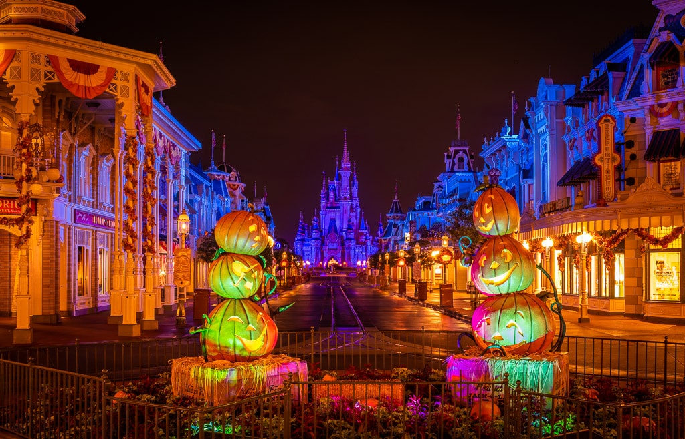
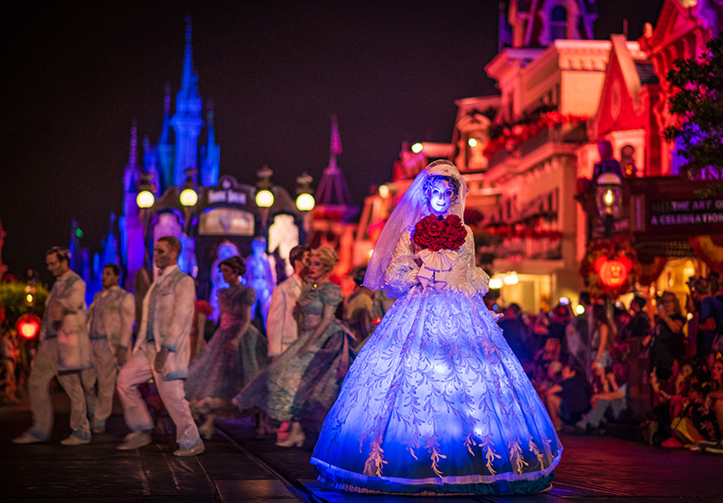
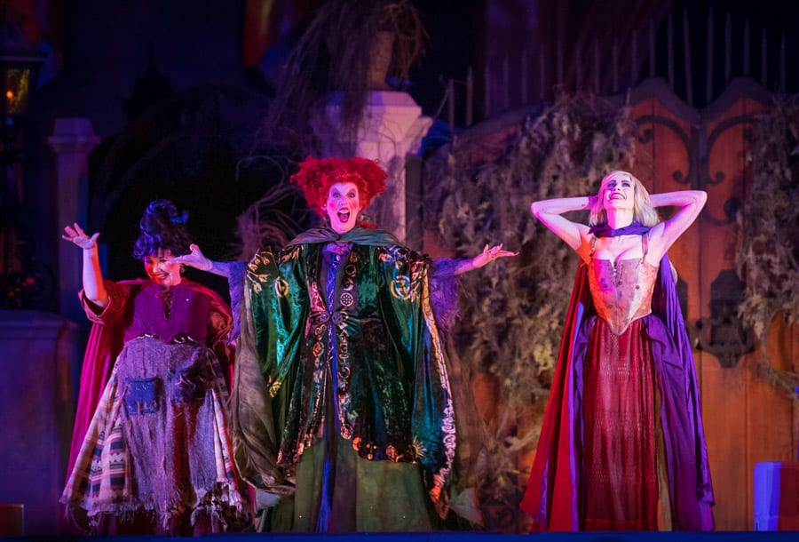
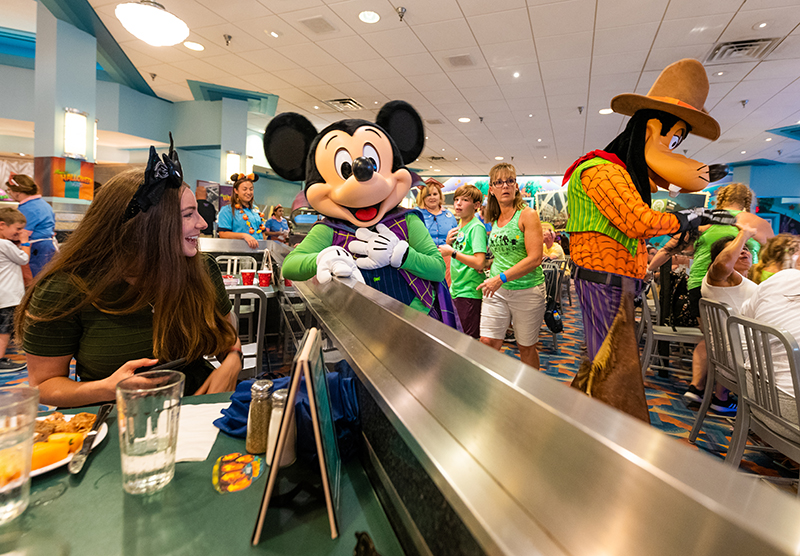

Tips & Tricks
Guide to Halloween 2024 at Disney World
Luisell Quintero Aug 29, 2024 Halloween is the longest “season” of the year at Walt Disney World, beginning in mid-August and running until October 31, 2024. This guide to spook season will cover everything you need to know about how Magic Kingdom, Epcot, Hollywood Studios, Animal Kingdom, and the resorts celebrate fall–from food to special events, merchandise, and more..
In terms of basics, we should start by acknowledging the reality that Halloween pales in comparison to Christmas at Walt Disney World. While the Halloween season is technically longer (3 versus 2 months), the holiday season is the biggest in scale and scope. See our Ultimate Guide to Christmas 2024 at Walt Disney World for everything you need to know about that.
Every park and resort gets into the holiday spirit for Christmas. By contrast, Halloween is largely confined to Magic Kingdom, Disney Springs, and a handful of other locations–and even then, it’s not as ubiquitous as Christmas. Nevertheless, if you’re planning on visiting Florida during the spook season months, we’ve got you covered with everything to make the trip as ghoulish (in a good way!) as possible…
HALLOWEEN SEASON CROWD
The crowd levels you’ll encounter at Walt Disney World during Halloween vary widely, which should be unsurprising since it’s a 3-month holiday. Generally speaking, weekends and school breaks are the busiest times to visit Walt Disney World from August through October.
This includes the first half of August, which is still summer vacation for most of the United States. See our August 2024 Crowd Calendar for further insights on good and bad times to visit in that month.
Historically, September is the least busy month at Walt Disney World, making pretty much any day during that month a good time to visit Walt Disney World. However, there are a couple of exceptions towards the beginning and end of the month. See our September 2024 Crowd Calendar.
All bets are off in October, which marks the kickoff to Walt Disney World’s 50th Anniversary celebration. While we’re expecting the entirety of the month to have crazy crowds, a recent wave of cancellations might ease attendance levels from crazy to “only” bonkers. See our October 2024 Crowd Calendar for further details.
MICKEY'S NOT SO SCARY HALLOWEEN PARTY
Mickey’s Not-So-Scary Halloween Party is a hard-ticketed event at Magic Kingdom that allows guests to celebrate the spook season at Walt Disney World. MNSSHP features special entertainment, like Mickey’s Boo to You Halloween Parade, Hocus Pocus Villains Spelltacular stage show, trick-or-treating throughout Magic Kingdom, and the Disney’s Not-So-Spooky Spectacular fireworks show. Lots of characters are out in the park wearing their favorite costumes – and you’re encouraged to wear yours, too!
Aside from 2020-2021 (when it didn’t happen), we’ve attended Mickey’s Not So Scary Halloween Party at least once every year since 2008–including over a dozen times in 2019! You can read about our most recent experience at the event in Mickey’s Scary HOT Halloween Party Report. For what it’s worth, the last two years have been better than 2018-2019, so if you haven’t attended since then, it’s potentially worth reconsidering.
From all of those party nights–and ticket purchases–we’ve learned a lot about how it works, much of which is also covered in our Guide to Mickey’s Not So Scary Halloween Party, which also covers whether it’s worth the money, strategy for the event, and much more.
Tickets for most dates of Mickey’s Not So Scary Halloween Party will sell out again in 2024, so we’d encourage you to make a decision to attend or not and buy tickets shortly after they go on sale.
Mickey’s Not So Scary Halloween Party has been announced in late April during “Halfway to Halloween” in each of the last two years. The three parties before that were announced in mid-February, mid-January, and mid-March, respectively. That’s quite the scattering of months, and it’s honestly difficult to say what’ll happen in 202
MINNIE'S HALLOWEEN DINE
At Disney’s Hollywood Studios, there’s Halloween fun at Hollywood & Vine where Minnie’s Seasonal Dining is back for Halloween. You can get in the spooky spirit during Minnie’s Halloween Dine.
This is once again the normal experience. The buffet recently returned and the full character experience is back. As such, we once again highly recommend Minnie’s Halloween Dine, especially to those who aren’t doing Mickey’s Not So Scary Halloween Party. Read our full Minnie’s Halloween Dine Review for photos of the characters, food, and more!